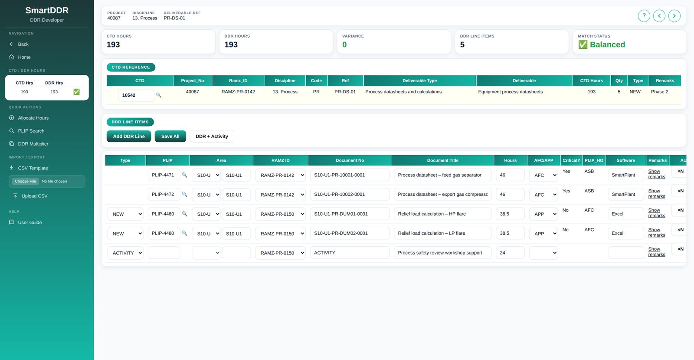
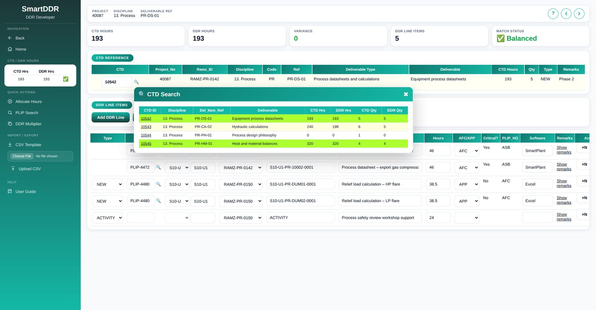
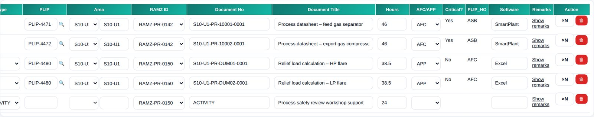
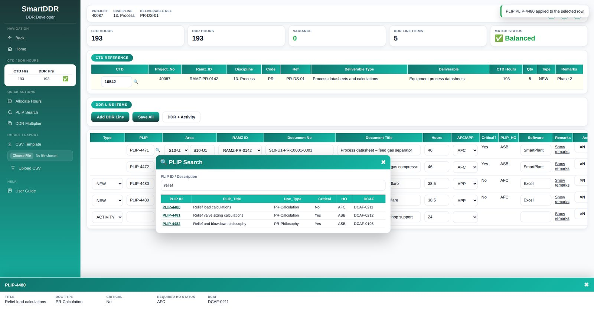
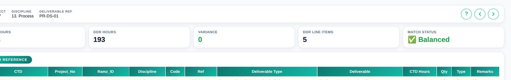
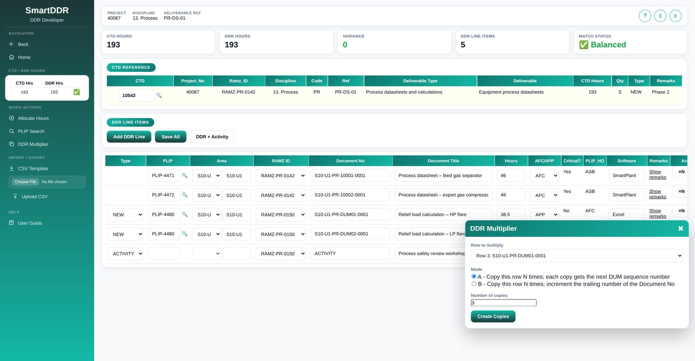
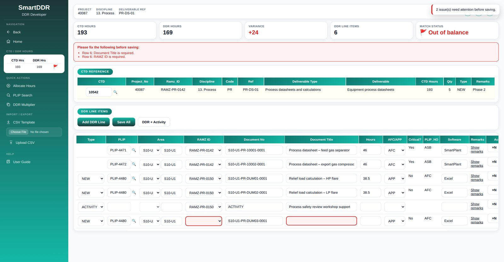
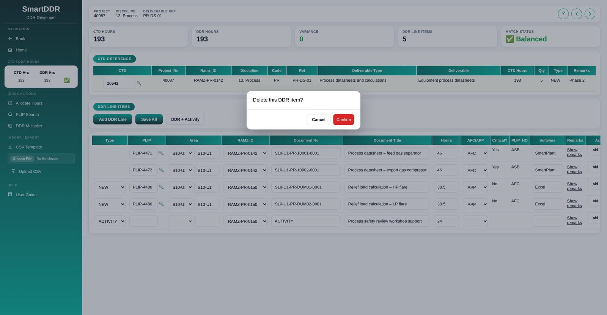

Contents
Quick start
The usual way to build the DDR for one CTD. Each step links to the full instructions.
- Open the CTDFrom its link, the CTD search, or Previous / Next.
- Add linesAdd DDR Line, DDR + Activity, or a CSV upload.
- Pick a PLIPCritical?, PLIP_HO and AFC/APP fill in for you.
- Check each lineRAMZ ID, document number, title and hours.
- Balance the hoursUntil Match status shows ✅ Balanced.
- Save AllNothing is stored until you do.
The screen
Everything for one CTD is on one page. The numbers on the picture match the list below it.

1 2 3 4 5 6 7- 1CTD / DDR hours check. The CTD's hours next to the DDR hours already saved, with ✅ when they match and 🚩 when they don't.
- 2Sidebar actions. Back, Home, Allocate Hours, PLIP Search, DDR Multiplier, CSV Template, Upload CSV and User Guide.
- 3Context bar. Project, discipline and deliverable reference of the open CTD, with ? to open this guide and the Previous ‹ and Next › CTD buttons.
- 4Scorecard. CTD hours, DDR hours, variance, number of lines and match status. It updates as you work, before you save.
- 5CTD reference. The CTD you are working on. The 🔍 next to its ID opens the CTD search.
- 6Line toolbar. Add DDR Line, Save All and DDR + Activity.
- 7DDR line items. One row per document or activity. The grid scrolls sideways to show every column.
Open this guide from the page
Click User Guide in the sidebar, the ? button in the context bar, or press F1. The guide opens in a panel over the left half of the screen, so you can follow the steps on the right while you work. It stays open, at the same place, when the page reloads after a button click. Close it with ✖ or Esc, or choose Open in new tab to read it full size.
On a narrow screen (below about 900 px) the sidebar is hidden. Tap ☰ at the top left to open it, or ? at the top right for this guide, which then fills the screen. The page follows your computer's light or dark setting.
Open a CTD
The page always works on one CTD, named in the address as DDR_DeveloperV3.aspx?CTD_ID=10542. You normally arrive from a CTD link elsewhere in SmartDDR. To move to another CTD:
Search for a CTD
- Click 🔍 next to the CTD ID in the CTD Reference card.
- The search lists every CTD in the same project and discipline, with CTD and DDR hours and quantities.
- Click a CTD ID to open it.

Step through CTDs
Use ‹ and › at the right of the context bar to open the previous or next CTD by ID. When there are no more, the page says No further CTD records in that direction.
Add DDR lines
There are four ways to add lines. Lines added on screen are not stored until you press Save All.
| Button | What it adds |
|---|---|
| Add DDR Line | One document line, pre-filled with suggestions (see below). |
| DDR + Activity | One document line and one activity line in a single click. |
| ×N on a row, or DDR Multiplier | Copies of an existing line. See Copy lines. |
| Upload CSV | Many lines from a file, saved straight to the database. See Import from CSV. |
What a new line is pre-filled with
To save typing, a new document line starts with the values most often used before:
- PLIP: the PLIP used most often for this deliverable reference (for example
PR-DS-01). Its Critical?, PLIP_HO and AFC/APP are filled in too. - Document Title and Software: the ones used most often with that PLIP.
- Document No: the number pattern used most often with that PLIP on similar projects, with its fourth part replaced by the next dummy number (
DUM01,DUM02…). If the CTD's Type contains CHANGE, the line is marked EXISTING and the fourth part becomesMASTRinstead.
Always check the suggestions. They are a starting point, not a decision.
Area and the AAA-UU placeholder
A document number starts with a 6-character area code such as S10-U1. When the page cannot work out the area, the suggested number starts with the placeholder AAA-UU. Type the 6-character area code in the row's Area box and the placeholder in the document number is replaced when you leave the box.
Dummy numbers
New document numbers use a running dummy sequence in their fourth part: DUM01 to DUM99, then DU100, DU101 and so on. The page looks at every line on screen, saved or not, and takes the next number after the highest one in use, so numbers never repeat within the CTD.
Fill in a line
The grid is wider than most screens; scroll it sideways to reach Software, Remarks and the row actions.

| Column | Needed to save | What to enter |
|---|---|---|
| Type | Optional | NEW, EXISTING or ACTIVITY. Shown only on lines that are not saved yet. Choosing ACTIVITY clears the PLIP, locks PLIP and Area, and sets Document No to ACTIVITY. Switching back clears the document number so you can enter one. |
| PLIP | Optional | The PLIP ID. Type it or use 🔍 on the row. See Pick a PLIP. Not used on activity lines. |
| Area | Optional | The 6-character area code. Pick from the list or type it; typing replaces the AAA-UU placeholder in the document number. |
| RAMZ ID | Required | Pick from the RAMZ IDs set up for the project. |
| Document No | Required | The full document number. Activity lines use ACTIVITY. |
| Document Title | Required | The document or activity title. |
| Hours | Optional | Man-hours as a number, such as 38.5. Left blank, it is saved as 0. |
| AFC/APP | Filled from PLIP | Handover status. Set to AFC when the PLIP's required handover status is ASB, otherwise APP. You can change it. |
| Critical? | Filled from PLIP | Whether the PLIP is critical documentation. Read-only. |
| PLIP_HO | Filled from PLIP | The PLIP's required handover status. Read-only. |
| Software | Optional | The authoring software, such as SmartPlant or Excel. |
| Remarks | Optional | Click Show remarks to open the box, and Hide remarks to fold it away. |
| Action | — | ×N copies the line; 🗑 deletes it. |
Pick a PLIP
A PLIP can be typed straight into the row, or found with the search.
Type it in
Type the PLIP ID in the row's PLIP box and press Tab. The page looks it up and fills in Critical?, PLIP_HO and AFC/APP. A panel slides up from the bottom showing the PLIP's title, document type, critical flag, required handover status and DCAF. If the ID is not an active PLIP, the panel closes and those columns stay blank.
Search for it
- Click 🔍 next to the PLIP box on the row you want to fill.
- Type part of a PLIP ID or description, for example
relief, and press Tab or Enter. Only active PLIPs are listed. - Click the PLIP ID. It is written into that row, the status columns fill in, and the details panel opens.

Balance the hours
The DDR lines for a CTD should add up to the CTD's hours. The scorecard shows where you stand:

| Tile | Meaning |
|---|---|
| CTD hours | Total hours on the CTD. |
| DDR hours | Sum of the Hours column for every line on screen. |
| Variance | CTD hours minus DDR hours. +24 means 24 hours still to allocate; a negative number means the lines exceed the CTD. |
| DDR line items | Number of lines on screen, including activity lines. |
| Match status | ✅ Balanced when the variance is 0 and there is at least one line; otherwise 🚩 Out of balance. |
Allocate Hours
Allocate Hours in the sidebar splits the CTD's hours evenly across every line on screen, rounded to two decimals. Any rounding difference goes to the first line so the total matches exactly.
100 ÷ 3 = 33.33 each → total 99.99, 0.01 left over
Line 1 = 33.34 Line 2 = 33.33 Line 3 = 33.33 → total 100.00
Copy lines with the DDR Multiplier
When a deliverable needs several similar documents, set up one line and copy it.
- Click ×N on the line to copy, or DDR Multiplier in the sidebar.
- Check Row to multiply. From ×N it is already set to that line; from the sidebar it starts on the first line.
- Choose a Mode (below) and the Number of copies, from 1 to 50.
- Click Create Copies. The copies are added at the end of the grid; the original line is unchanged.

Mode A: next dummy number
Each copy gets the next dummy number in the fourth part of the document number.
S10-U1-PR-DUM01-0001, 3 copies, DUM02 already used
→ …-DUM03-0001
→ …-DUM04-0001
→ …-DUM05-0001
Mode B: next document number
Each copy adds one to the number at the end of the document number, keeping leading zeros.
S10-U1-PR-10001-0001, 3 copies
→ S10-U1-PR-10001-0002
→ S10-U1-PR-10001-0003
→ S10-U1-PR-10001-0004
Every other field is copied as it is, including the hours, so the variance changes. Re-balance with Allocate Hours or by hand, then Save All.
Save your work
Press Save All in the line toolbar. New lines are added and changed lines are updated in one go: either everything is saved, or nothing is. When it works you see DDR records saved successfully., the grid reloads from the database, and saved lines no longer show a Type box.
When something is missing
Before saving, the page checks every line. Document No, Document Title and RAMZ ID must be filled in, and Hours must be a number. Empty required boxes are outlined in red, and a panel above the CTD lists each problem by row number.

Fix the listed rows and press Save All again. An out-of-balance variance does not stop you saving; it is a warning, not a rule.
Delete a line
- Click 🗑 on the line.
- Click Confirm in the Delete this DDR item? box, or Cancel to keep it.

A line not yet saved
It is simply removed from the screen. Message: Unsaved DDR line removed.
A saved line
It is deleted from the database straight away, without waiting for Save All, and the grid reloads. Message: DDR line deleted.
Import lines from CSV
For many lines at once, fill in a CSV file in Excel and upload it.
- Click CSV Template in the sidebar. You get
DDR_Import_Template_CTD_10542.csvwith just the column headings. - Fill in one line per row under the headings and save as CSV. Keep the columns in the same order.
- Under Import / Export, click Choose File and pick your file.
- Click Upload CSV.
| Column | Needed | Rule |
|---|---|---|
CTD_ID | Optional | A whole number. Leave blank to use the CTD open on the page. |
Ramz_ID | Required | The RAMZ ID. |
PLIP_ID | Optional | The PLIP ID. |
Document_No | Required | The full document number. |
Document_Title | Required | Put the title in double quotes if it contains a comma. |
Man_Hours | Optional | A number. Blank means 0. |
HO_Status | Optional | AFC, APP or blank (upper or lower case). |
,RAMZ-PR-0150,PLIP-4480,S10-U1-PR-DUM04-0001,"Relief load calculation, HP flare",38.5,APP
,RAMZ-PR-0150,,ACTIVITY,Process safety review workshop support,24,
The file is checked in full first. If any row has a problem, nothing is imported and the panel lists each problem by the line number in your file, for example Line 4: Man_Hours must be numeric. Fix the file and upload it again. When it works you see 3 DDR line(s) imported from CSV.
Messages
Messages appear at the top right for five seconds. This is what each one means.
| Message | Kind | What it means / what to do |
|---|---|---|
| DDR records saved successfully. | Done | All lines are stored. |
| Added a document row and an activity row. | Done | From DDR + Activity. Fill in both, then save. |
| PLIP … applied to the selected row. | Done | The PLIP was written into the row. |
| Allocated … hours across … row(s). | Done | Hours were split. Save to keep them. |
| … copy/copies created from row …. | Done | Copies added at the end. Check their numbers, then save. |
| … DDR line(s) imported from CSV. | Done | The lines are already saved. |
| DDR line deleted. / Unsaved DDR line removed. | Info | See Delete a line. |
| No further CTD records in that direction. | Info | You are at the first or last CTD Previous / Next can reach. |
| Please complete Document No, Title and RAMZ ID on the highlighted rows. | Fix | Fill in the red-outlined boxes, then save again. |
| … issue(s) need attention before saving. | Fix | Read the list above the CTD card. |
| Save failed: … | Fix | The database refused the save and nothing was stored. Try again; if it repeats, send the message text to the SmartDDR administrator. |
| Add DDR lines before allocating hours. | Fix | There are no lines to split hours across. |
| This CTD has no hours to allocate. | Fix | The CTD's hours are 0 or blank. Check the CTD. |
| Add a DDR line before multiplying. | Fix | There is nothing to copy yet. |
| Number of copies must be between 1 and 50. | Fix | Enter a whole number from 1 to 50. |
| Choose a row to multiply first. / That row no longer exists. | Fix | Pick the row again in the Multiplier. |
| Choose a CSV file before uploading. | Fix | Use Choose File first. |
| The CSV file has no data rows. | Fix | The file has only the heading row. |
| CSV import failed: … | Fix | The database refused the import; nothing was imported. |
Questions
Why has the Type box disappeared from some lines?
Type is only shown on lines that are not saved yet. Once saved, the line's number shows whether it is a document or an activity.
The sidebar still shows 🚩 after I balanced the hours.
The sidebar reads saved hours. Press Save All and it updates. The scorecard at the top shows the unsaved position.
Can I save while the hours are out of balance?
Yes. Balance is shown as a warning so you can save work in progress. Aim to finish each CTD with ✅ Balanced.
How do I turn a document line into an activity line?
On an unsaved line, set Type to ACTIVITY. For a saved line, delete it and add an activity line with DDR + Activity, or change its Document No to ACTIVITY and clear its PLIP.
My document number starts with AAA-UU.
The page could not work out the area. Type the 6-character area code in the row's Area box and press Tab.
Does the CSV check for duplicate document numbers?
No. Check the file for duplicates before uploading, and check the grid afterwards.
Known limitations
- Previous / Next CTD only steps through 13. Process CTDs on project 40087. Use the CTD search on other projects.
- Changing the PLIP on a line that is already saved updates the PLIP and AFC/APP when you save, but the stored Critical? and PLIP_HO values for that line keep their old values.
- The CSV upload expects the template's column order; it does not match columns by heading.
- CSV imports leave Software, Remarks, Critical? and PLIP_HO blank.